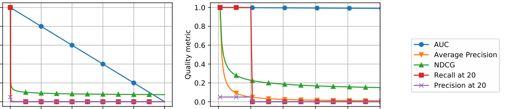
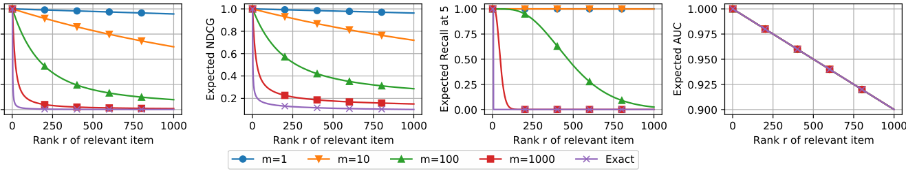

On Sampled Metrics for Item Recommendation (Extended Abstract)（论物品推荐中的采样指标）
- 会议/期刊: IJCAI 2021（Sister Conferences Best Papers Track，IJCAI 2020 最佳论文扩展摘要）
- 作者与机构: Walid Krichene, Steffen Rendle（Google Research）
- 推荐链路定位: 离线评测协议（贯穿召回/精排全链路的指标计算环节）
- 研究方向: 去偏公平、可信隐私与工业架构 / 协同过滤与双塔召回（评测侧）
- 论文原文: https://www.ijcai.org/proceedings/2021/0651.pdf
- 开源代码: 暂未开源
TL;DR (1分钟核心速览)
物品推荐评测为省去 \(O(n\log n)\)的全库排序，近年普遍采用“1 个相关物品 +\(m\)个均匀采样负例”来算 AP/NDCG/Recall。本文证明采样排名服从二项分布\(\tilde{r}\sim \mathrm{B}(m,\frac{r-1}{n-1})+1\)，该压缩使 top-heavy 指标即使在期望意义下也不保持推荐器间的相对序，\(m\to 1\) 时全部指标退化为 AUC 型线性衰减；作者提出无偏排名反缩放与偏差-方差最小化两类修正，在 MovieLens 上修正指标识别真实排序的成功率显著高于朴素采样指标。
Background & Motivation (背景与核心矛盾)
- 主流范式: NCF、CML、CMN 等大批工作在全库排序代价过高时，只对“真实相关物品 + \(m\) 个随机负样本”排序，再在该子集上直接套用 AP/NDCG/Recall@k，称为采样指标（sampled metrics）。
- 前人局限: 采样训练（negative sampling for training）已被充分研究，但采样评测的统计后果完全空白；且采样把排名从 \([1,n]\)压到\([1,m+1]\)，恒低估真实排名，导致指标语义漂移。
- 核心洞察 (Key Insight): 指标的本质是“把排名映射为质量分”。精确 AP 中第 1 名价值是第 2 名的 2 倍（NDCG 为 1.58 倍），而 AUC 仅线性衰减；采样后所有指标都被“拉平”向线性靠拢，于是丢掉了应用真正关心的头部敏感性。
- 本文切入点: 不做新模型，而是把“采样评测”当作一个统计估计问题形式化——先定义一致性，再推导采样排名的精确分布，最后反解出可用的修正估计量。

Method (核心方法设计)
1. 整体框架 (Overall Architecture)
论文是一条“诊断—建模—修正—验证”的分析流水线：给定推荐器 \(A\)与实例\(x\)，先得到相关物品的精确排名\(r(A,x)\in\{1,\dots,n\}\)与精确指标\(M(r)\)（作为 gold）；随后模拟工业与论文中常用的采样过程，得到随机变量\(\tilde{r}\)；由\(\tilde{r}\)的二项分布刻画其偏差结构，据此构造两类修正映射\(\hat{M}:\{1,\dots,m+1\}\to\mathbb{R}\)，使其期望尽量逼近\(M(r)\)；最后在 MovieLens 的真实推荐器排名分布上，用“成对比较中正确识别真实优劣的比例”来度量各方案。整条链路无训练、无参数学习，推理开销仅为对每个测试实例做一次\(O(m)\) 的采样与一次指标查表。
flowchart TD
A["精确排名 r ∈ [1, n]"] --> B["采样: 1 相关物品 + m 个均匀负例"]
B --> C["采样排名 r̃ ~ Bin(m, (r-1)/(n-1)) + 1"]
C --> D["朴素采样指标 M(r̃)：不一致"]
C --> E["无偏排名估计 r̂ = 1 + (n-1)(r̃-1)/m"]
C --> F["偏差-方差最优 M̂：正则最小二乘闭式解"]
E --> G["比较推荐器 / 报告修正指标"]
F --> G2. 关键设计拆解 (Key Designs)
- 采样排名的二项分布刻画与一致性定义：痛点是此前无人说清“采样究竟改变了什么”。作者指出每个被采样的负例以概率 \(p=\frac{r-1}{n-1}\)排在相关物品之前，\(m\) 次有放回采样即得 \(\tilde{r}\mid r \sim \mathrm{B}\!\left(m,\tfrac{r-1}{n-1}\right)+1,\qquad \mathbb{E}[M(\tilde{r})]=\sum_{i=1}^{m+1}\Pr(\tilde{r}=i)M(i)\)。 由此给出一致性（consistency）定义：若 \(\frac{1}{|D|}\sum_x M(r(A,x))>\frac{1}{|D|}\sum_x M(r(B,x))\)的成立与否必须与\(\mathbb{E}[\cdot]\)上的同一比较等价，才叫一致。直觉上，\(\tilde r\)对\(r\)的映射是“随机压缩 + 单调”，压缩后头部差异被抹平、且抹平程度依赖推荐器自身的排名分布，故偏差是推荐器相关而非可加常数，无法靠调\(m\)消除。AUC 因对\(r\) 线性，期望运算可交换，是唯一一致的特例。

-
无偏排名反缩放修正：既然指标作用在错误的排名上，就先修排名。由 \(p=\frac{r-1}{n-1}\)的无偏估计为\(\frac{\tilde r-1}{m}\)，立即得\(\hat r = 1+\frac{(n-1)(\tilde r-1)}{m}\)，并定义 \(\hat{M}(\tilde r)=M\!\left(\left\lfloor 1+\tfrac{(n-1)(\tilde r-1)}{m}\right\rfloor\right)\)。 实现上只是“先放大排名再套原指标”一行代码，物理直觉是把 \([1,m+1]\)的采样尺度线性还原到\([1,n]\)的真实尺度；代价是方差放大\(\frac{n-1}{m}\) 倍。
-
偏差-方差权衡的闭式修正与评测开销：无偏估计方差过大时，直接优化整张映射表 \(\hat{\mathbf{M}}\in\mathbb{R}^{m+1}\)： \(\arg\min_{\hat{\mathbf{M}}}\sum_{r=1}^{n}\left(\left(\mathbb{E}[\hat{M}_{\tilde r}\mid r]-M(r)\right)^2+\gamma\,\mathrm{Var}[\hat{M}_{\tilde r}\mid r]\right)\)， 这是一个带正则的最小二乘问题，有闭式解，\(\gamma\)控制偏差与方差的折中（\(\gamma\)越大越平滑、方差越小）。本文无训练损失与负采样策略可言——被“训练”的其实是评价函数本身；在线/离线评测成本均为每个实例\(O(m)\)次排序比较，远低于全库\(O(n\log n)\)。
Experimental Setup & Evaluation Protocol (实验设置与评估协议)
- 数据集与预处理: 解析用可控玩具例（\(n=10{,}000\) 物品、5 个实例、3 个推荐器 A/B/C）+ 真实数据 MovieLens 评分数据；扩展摘要未给出 MovieLens 的用户/物品/交互统计量，需查完整版。
| 数据集 | #Users | #Items | #Interactions | 稀疏度/密度 | 特征/场景说明 |
|---|---|---|---|---|---|
| Toy Example | 5 实例 | 10,000 | 5 | — | 人工构造 3 个推荐器的排名以暴露不一致性 |
| MovieLens | 未报告 | 未报告 | 未报告 | — | 电影评分，驱动真实推荐器排名分布 |
- 数据划分与防穿越 (Splitting Strategy): 沿用 He et al. (2017, NCF) 的 Leave-One-Out：每用户留 1 个测试正例，其余为训练集。
- 排名评测协议 (Ranking Protocol): 核心实验对象即 Sampled Ranking——每个实例 1 个相关物品 + \(m\)个均匀采样负例；主设置\(m=99\)，并对\(m\in\{1,10,100,1000\}\) 扫描；精确 Full-Ranking 指标作为 gold 参照。
- 对比基线与超参设置: 三类“方法”即为朴素采样指标 \(\hat M(\tilde r)=M(\tilde r)\)、无偏反缩放修正（向下取整）、偏差-方差修正（\(\gamma>0\)需调）；评价它们的元指标是成对比较的正确识别率与标准差（1000 次重复，含\(\pm\) 方差）。
Key Experimental Results (实验关键数据)
1. 主实验对比 (Main Results)
| 推荐器 | 精确排名 | AUC（精确 / 采样 \(m{=}99\)） | AP（精确 / 采样） | NDCG（精确 / 采样） | Recall@10（精确 / 采样） |
|---|---|---|---|---|---|
| A | 100,100,100,100,100 | 0.990 / 0.990±0.004 | 0.010 / 0.630±0.129 | 0.150 / 0.724±0.097 | 0.000 / 1.000±0.000 |
| B | 40,40,8437,9266,4482 | 0.555 / 0.555±0.014 | 0.010 / 0.336±0.073 | 0.122 / 0.444±0.054 | 0.000 / 0.400±0.000 |
| C | 212,2,743,5342,1548 | 0.843 / 0.843±0.014 | 0.101 / 0.325±0.050 | 0.208 / 0.460±0.039 | 0.200 / 0.567±0.092 |
（采样列为 1000 次重复的均值 ± 标准差；粗体为同一指标下最优。精确指标里 C 的 AP 是 A/B 的 10 倍，采样后反被 A 以近 2 倍碾压。）
2. 消融实验 (Ablation Study)
对“修正方式 × 样本量”的定性消融（数值为原文定性结论的归纳，非杜撰数值）：
| 配置 | 估计偏差 | 估计方差 | 实现成本 | 正确识别真实排序 |
|---|---|---|---|---|
| 朴素采样 \(M(\tilde r)\) | 高（推荐器相关，大\(m\) 仍显著） | 低 | 无 | 差（甚至把最差模型判为最优） |
| 无偏反缩放 \(\hat r\)（式 9） | 低（一阶无偏） | 高（放大约\((n-1)/m\)） | 一行代码 | 明显优于朴素 |
| 偏差-方差修正（式 10） | 可调（\(\gamma\)控制） | 中 | 需拟合映射表 + 调\(\gamma\) | 最优，但\(\gamma\) 需谨慎配置 |
| AUC（任意 \(m\)） | 无（线性指标天然一致） | 低 | 无 | 完美一致，但对头部不敏感 |
3. 关键实验发现 (Key Findings)
- 结论可被完全反转：精确 AP 上 C（0.101）是 A（0.010）的 10 倍，但 \(m=99\)采样 AP 上 A（0.630）反超 C（0.325）；Recall@10 更极端，精确值 A\(=0\)、C\(=0.2\)，采样后 A\(=1.000\)、C\(=0.567\)——最差推荐器被判为最好，且这是期望层面（1000 次重复）的系统性偏差，不是方差噪声。
- 偏差依赖推荐器与样本量，无法用“调大 \(m\)”修复：AP 的相对序随\(m\)漂移为\(m<50\)：A>C>B；\(m\approx200\)：A>B>C；\(m\approx500\)：C>A>B；\(m\)很大：C>A=B。即任意两种结论都能通过选\(m\) 得到，说明采样指标的不可比性是结构性的。
- AUC 是唯一一致指标：其精确值与采样值在 A/B/C 上逐位相同（0.990/0.555/0.843），且期望与 \(m\) 无关；但 AUC 对头部完全不敏感（第 101 名提升到第 100 名与第 2 名提升到第 1 名等价），恰好因此才与采样“线性压缩”相容——这反证了 top-heavy 指标与采样本质上不兼容。
- 修正有效但有代价：无偏反缩放与偏差-方差修正虽方差更大，成对比较的正确识别率仍高于朴素采样，其中偏差-方差方案更优但 \(\gamma\) 需调；作者强调修正只能缓解，偏差只有取消采样才能根除。
Highlights & Limitations (亮点、对比与审稿批判)
- 与代表作对比 (vs. Prior Work): 与 He et al. (2017, NCF) 等“使用采样评测”的工作相比，本文首次把该协议当成统计估计量审计，证明其不保序；与 Yu et al. (2017) 的采样训练偏差分析互补——那篇管训练梯度，这篇管评测结论的可比性；相比常规“换模型涨点”的推荐论文，本文提供的是全领域通用的评测元规则。
- 可迁移亮点: ① 凡评测侧做了任何近似（采样候选、ANN 召回截断、负例缓存复用），都应按“一致性”重新审计，而非只报告方差；② “先用二项分布建模压缩噪声、再反缩放修正”这套思路可直接迁移到 ANN Top-k 截断评测与流式曝光日志的稀疏上报场景。
- 审稿级局限批判: ① 扩展摘要仅给出玩具例与 MovieLens 的定性/局部数值，缺少大规模工业目录（\(n\sim10^7\)）与多指标显著性检验的定量结论，修正指标的“正确识别率”未给完整表格；② 无偏反缩放把方差放大\((n-1)/m\)倍，在\(n/m\)达\(10^4\)量级时需多次重采样，与“采样就是为了快”的初衷冲突；③ 偏差-方差修正依赖\(\gamma\)与整张\(m+1\) 维映射表的拟合，跨数据集可移植性未验证。
Rating (四维评分)
- 方法创新性 (Novelty): ⭐⭐⭐⭐ （把评测协议形式化为估计量问题、证明“期望不保序”，并以 AUC 线性性给出解释，视角锐利但工具本身为经典统计）
- 评估协议与实验扎实度 (Protocol & Experiments): ⭐⭐⭐ （玩具例的构造极具说服力且含 1000 次重复，但真实数据实验在扩展摘要中偏定性、缺完整表格与显著性检验）
- 写作与数学规范度 (Clarity & Rigor): ⭐⭐⭐⭐ （一致性定义、二项分布推导与无偏估计链条干净利落，公式极简而信息密度高）
- 工业落地与复现价值 (Industrial & Practical Value): ⭐⭐⭐⭐ （“一行代码反缩放”即可修正历史论文结论，对所有做大规模采样评测的团队都有直接警示价值；但因改动评测口径会牵动既有基线复现成本，落地需全量重跑）